The Video Battle Builder Guide
How to turn footage of a turn-based battle into a Video Battle that plays on a 1980s PC, and how to decide which of the builder's settings matter for yours.
What a Video Battle is
A Video Battle is a turn-based battle whose picture is video. A loop of the scene standing still, the idle loop, plays in the top of the screen. Under it, the band holds the menu, the party's HP and MP, and a message line. When a player picks a command, its clip joins the loop exactly where the loop stands, plays, and joins back onto the loop at its end. The battle reads as one continuous scene, with music under it, on machines as slow as the original 4.77 MHz IBM PC.
The battle is data. One file, BATTLE.VBT, holds every clip, the music, the menus and the rules: who has which command, what each command does, and how the enemy chooses its moves. On os8088, VBATTLE.O88 plays it.
The builder runs on your modern computer and makes that file. It:
- reads your footage (any video ffmpeg understands) and shows it as the target screen will;
- finds the idle loop in a recording of the scene standing still, and recommends where each clip joins it and where it leaves;
- holds the rules: the characters, their menus, the actions, the enemy and its moves, and how the battle ends;
- builds and checks the bundle. Every way into and out of every clip is decoded again and compared, so a join that would leave a wrong pixel stops the build;
- prices it against the machine you made it for: each clip's share of the disk, and what the player will hold in 640 KB;
- puts it on a disk: a floppy, or a hard disk image that boots os8088 by itself.
Most of this guide is a walkthrough. It builds one battle from start to finish with a screenshot at every step. After it, When and why takes the settings that change the result and says when each is worth changing.
Before you start
What you need on your computer
- Python 3.11 or newer with Tk, for the window. The installer from python.org includes Tk. On Linux, install your distribution's
python3-tkpackage. - numpy and Pillow:
python3 -m pip install numpy pillow - ffmpeg and ffprobe on your PATH, from ffmpeg.org. They read your footage and your sounds.
- Optional:
python3 -m pip install tkinterdnd2lets you drop files on the window on macOS and Linux. On Windows, dropping works without it. Without it, every drop has a button that does the same. - Optional, to listen in the window:
afplayon macOS, the built-in player on Windows, orpaplay,aplayorffplayon Linux. With none of them, the window tells you where the WAV it made is.
Starting it
Open a terminal in the folder this guide is in and run:
python3 os88vbtgui.pyTo open a project at the same time, name it: python3 os88vbtgui.py MYFIGHT.vbp. On Windows, py os88vbtgui.py may be the command instead.
What is in this folder
| File | What it is |
|---|---|
os88vbtgui.py | The builder's window. Start here. |
os88vbt.py | The builder on the command line (see The command line). The window runs it to build and to make disks. |
vbtproj.py, vbtana.py | The project, and the analysis: reading footage, finding loops, scoring joins, measuring sounds. Both work on the command line too. |
VBATTLE.O88 | Video Battle, the os8088 program that plays a battle. Every disk the builder makes gets a copy. |
VBATTLED.O88 | The same program, writing a record of each play beside itself (VBPROF1.DAT and on), for finding out why a machine stutters. Hard disks the builder makes get a copy. |
boot/ | os8088 itself (the kernel and drivers), so a hard disk image the builder makes can boot. |
GUIDE.HTML, guide/ | This guide and its pictures. |
README.TXT | A one-page summary. |
the other .py files | Parts of the builder, among them the video encoder it reads footage with. Leave them where they are. |
Where a project keeps things
A project is one file, NAME.vbp. It names your footage and sounds by where they are, relative to the project, so keep them beside it or in a folder under it. The first time the window looks at a video it encodes it, which takes a minute or two; the frames are kept in NAME.cache/ beside the project, and every look after that is instant. A build writes BATTLE.VBT (and BATTLEV.VBT, BATTLEH.VBT for the other adapters) beside the project too.
Long work (reading a video, finding loops, building, making a disk) runs in the background. The status bar at the bottom says what it is doing, the progress bar moves, and Cancel stops it. A job reads the project from its file, so the window asks you to save a new project before its first job.
How a battle fits together
Six kinds of footage make a battle. You do not need all of them: the idle loop, one action and one ending make a battle that plays.
| Piece | What it is | Where it is set |
|---|---|---|
| The idle loop | The scene standing still, a few seconds long, played round and round while the player chooses. Held in memory. | Idle tab |
| Action clips | One for each thing that can happen: an attack, a spell, the enemy's move. Each starts at one of the loop's anchor frames and ends on its exit frame, so it joins the loop both ways. | Clips tab; the Actions tab says which clip each action plays |
| Openings | What plays before the battle, in turn from a black screen. The last one joins the idle loop. | Openings tab |
| The title loop | Optional: a loop before the openings, round until the player presses Enter. | Title & endings tab |
| Endings | A victory clip and a defeat clip, played to their end. Each can then hold, fade or join an end loop, or play the battle again. | Battle tab (the clips) and Title & endings tab (what follows) |
| Sound | The music, which always loops; each clip's sound effects, placed on its timeline; the menu's own small sounds. | Battle, Clips, Sounds tabs |
Every join is exact. The builder makes the frames between the screens the player will really have up, so a clip that starts on the loop's frame 6 starts from frame 6 as it is on the glass. The only question is how alike the two pictures are, and the window scores that for you.
Making a battle, step by step
This walkthrough builds The Iron Beetle: two heroes, Ari and Bram, against a giant beetle. Its footage is os8088's own demo battle, drawn and scored for the project, written out as the ordinary files a screen recording would give you:
| File | What it is |
|---|---|
footage/idle.mp4 | The scene standing still, recorded for a while: four turns of its loop |
footage/ari_attack.mp4, ari_bolt.mp4, ari_limit.mp4, bram_attack.mp4, bram_heal.mp4, beetle_attack.mp4 | One recording a command, each from the standing pose and back to it |
footage/victory.mp4, defeat.mp4 | How it ends |
footage/title.mp4, reveal.mp4 | A title card, and the scene coming up out of black |
footage/music.wav, slash.wav, zap.wav, ... | The music, and one sound for each effect |
footage/cover.png | The title picture |
Every screenshot of the window in this guide is the window working on these files. The same battle, ready made, is one command away: python3 os88vbt.py demo-project demo.vbp writes it as a project that needs no footage at all, which is a good way to look around before you start your own.
1. Record the footage
Plan the recording around the idle loop, because everything joins it.
- The idle loop. Record the scene standing still for several seconds, longer than one turn of its animation. The window finds the loop in it.
- Each action from the standing pose to the standing pose. Start the recording a little before the command is given and stop a little after the scene has settled again. The window finds where it leaves the pose and where it comes back, so you do not need to trim it.
- One recording a file is simplest: each file becomes a clip of its own. A long recording works too, with several clips cut from it (From a source... on the Clips tab).
- The frame rate. The battle plays 15 frames a second. A recording at 15, 30 or 60 frames a second is fine. A recording made off a screen at a whole multiple of the game's own rate (60 frames of a game that draws 15) is read by the frames the game drew; see Captures by their cadence.
- Sound. The music is best as a file of its own, so it can loop. Effects can be files of their own, or a clip can keep the sound it was recorded with (Its own soundtrack).
2. Start a project
Start the window. It opens on an empty project called Untitled. Choose File > Save as... and save it beside your footage, here as BEETLE.vbp. The title bar then names the battle and its file; a * in front means there are changes not yet saved.
The Build tab already says what is missing. A new project has no idle loop, which is an ERROR (it stops a build), and no opening and no music, which are INFO lines (it builds without them). Double-click a line to go to the tab that fixes it.

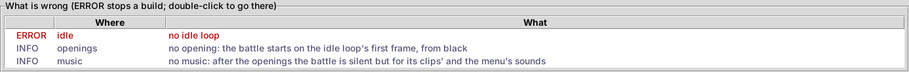
The File menu has New, Open..., Open recent, Save, Save as... and Quit; the Edit menu has Undo (Ctrl+Z) and Redo (Ctrl+Y), which undo any change to the project; the View menu's The band in the previews shows or hides the menu band under every preview.
3. The Battle tab
The Battle tab holds what is true of the whole battle.

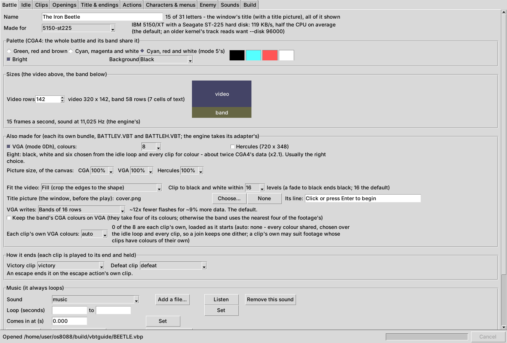
- Name. The battle's name, up to 31 letters. It is the title of the battle's window on the os8088 desktop.
- Made for. The machine the battle is for: its processor and its disk. The note beside it says what that machine can read and draw. This is the most important choice; see Made for, and the disk.
- Palette. The four CGA colours the whole battle is drawn in, the band included: one of CGA's three sets, Bright or not, and the Background colour. The swatches show the four. Pick the set whose colours are nearest your footage's.
- Sizes. How many of the screen's 200 rows are video; the rest are the band. 142 rows of video leave a band of 58 rows, seven lines of text.
- Also made for. Tick VGA or Hercules and every build makes a version of the battle for that adapter too (
BATTLEV.VBT,BATTLEH.VBT); the player picks the one for the machine it is on. See CGA, VGA and Hercules. - Title picture. Choose... a picture and the battle opens in a window on the desktop showing it, with Its line under it ("Click or press Enter to begin" unless you change it). None takes it away.
- How it ends. The Victory clip and the Defeat clip. Pick them once the clips are in (step 5).
- Music. Further down; see step 7.
4. The idle loop
On the Idle tab, click Add a video... and choose the recording of the scene standing still (or drop the file on the tab). The window reads it, which is a minute or two the first time, and then recommends loops at once: the list shows each candidate as a range of frames and how much its seam differs, the jump from the loop's last frame back to its first. The best is first and chosen.

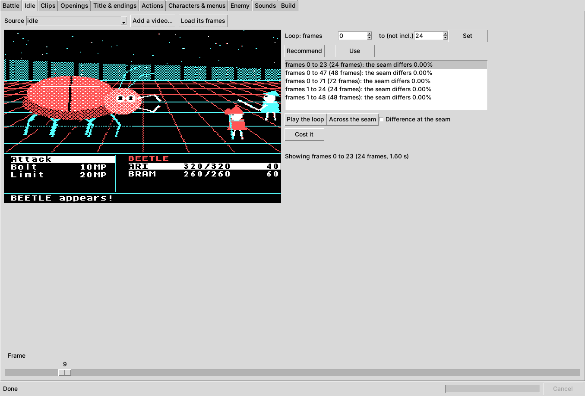
- Play the loop plays the loop being chosen, round and round. Across the seam plays the frames either side of the seam, so you can watch the jump. Either button again stops it.
- Difference at the seam shows the loop's last frame with every pixel that changes into its first frame marked. The fewer marks, the smoother the seam.
- Click a candidate to preview it; Use makes it the loop. Or type the frames in Loop: frames ... to (not incl.) and click Set.
- Cost it says what the loop will take in memory: its records, the seam's, and the largest.

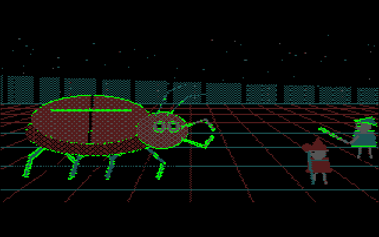
5. The clips
On the Clips tab, click Add videos... and choose every action's recording at once (or drop them on the window). Each video becomes a clip named after its file, read one after another. Then go through them one at a time.

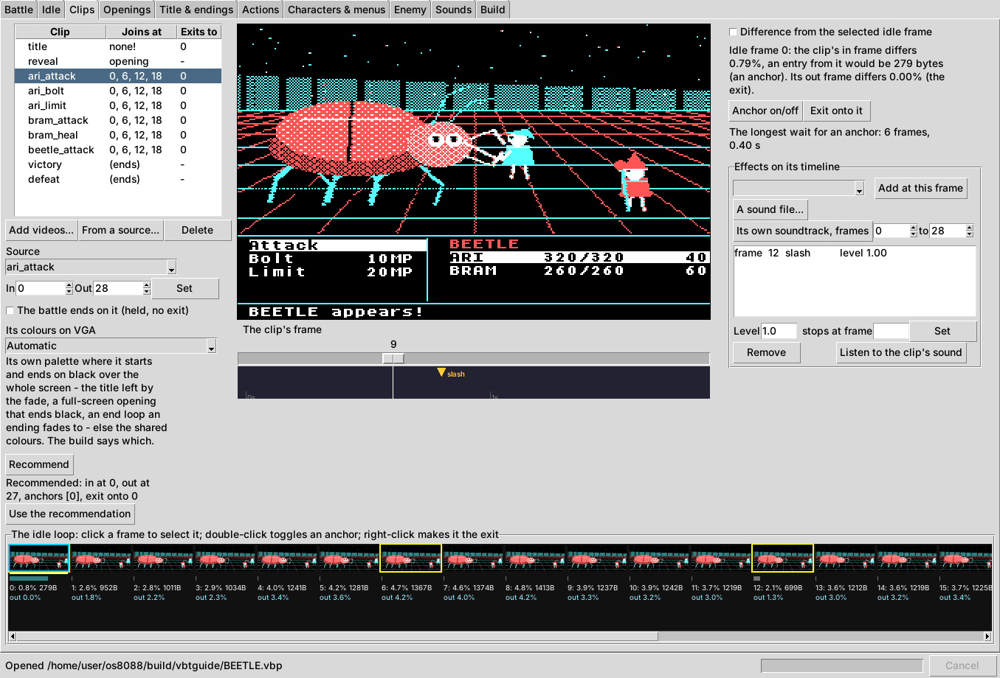
- Pick the clip in the list. The picture shows its frame at the slider; the filmstrip at the bottom is the idle loop.
- Recommend, then Use the recommendation. The window finds the clip's In frame (of its first frames, the one most like a frame of the loop), the anchors (the loop's frames it can join at), its Out frame and its exit (the loop frame its last frame is most like). The line under the button says what it found.
- Check the joins on the filmstrip. Under each loop frame are two numbers: how much the clip's In frame differs from it, with the bytes an entry from it would cost, and how much the clip's Out frame differs (
out). Click a frame to compare; tick Difference from the selected idle frame to see the pixels. Double-click a frame (or Anchor on/off) to make it an anchor or not; right-click it (or Exit onto it) to make it the exit. - Adjust In and Out if you want, and click Set.
- Add its sounds. Under Effects on its timeline, choose a sound and click Add at this frame to place it at the slider's frame, or A sound file... to bring one in. A cue's Level and stops at frame are set below the list; drag a cue on the timeline to move it. Its own soundtrack, frames uses the clip's recorded sound between two frames instead. Listen to the clip's sound plays it as the build will make it.
- The endings. For the victory and defeat clips, tick The battle ends on it (held, no exit). An ending has no exit: the battle stops on it.
The Joins at column says where each clip can start, and the line under the buttons says The longest wait for an anchor: how long a command can wait for the loop to reach one of its anchors. Its colours on VGA matters only for a VGA version; see A clip's own palette.
6. The openings
The openings play before the battle, in turn, from a black screen. On the Openings tab, choose a clip in the box under the list and click Add (or drop a video on the tab, which adds it as a clip and as the next opening). Earlier and Later change the order; Remove takes one out. A battle can have up to eight.

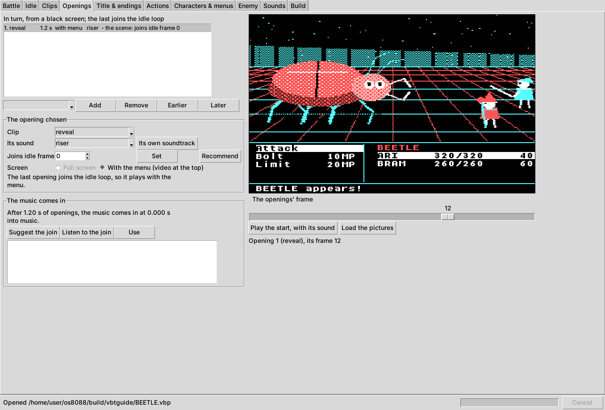
- Its sound plays instead of the music while the opening plays; Its own soundtrack uses the clip's recorded sound.
- Screen: Full screen plays it over the whole screen with no band; With the menu (video at the top) plays it in the video area with the band under it. The full-screen ones come first. The last opening always plays with the menu, because it joins the idle loop.
- Joins idle frame: the loop frame the last opening leaves onto. Recommend finds the most alike.
- The music comes in: when the last opening's sound ends, the music starts. Suggest the join lists the places in the music that follow the opening's sound best; Listen to the join plays the end of the openings into the music; Use takes the one chosen.
- Load the pictures and Play the start, with its sound preview the battle's start: the openings in turn, then the loop.
7. The music
Back on the Battle tab, under Music (it always loops): click Add a file... and choose the music (or drop it on the Music box). Then find its loop. Find loops listens to it and lists the places where it can jump back with the least seam, each with how alike the two sides are. Click one and Listen to its jump to hear the jump, then Use the chosen loop. Or type the loop's two times and click Set.

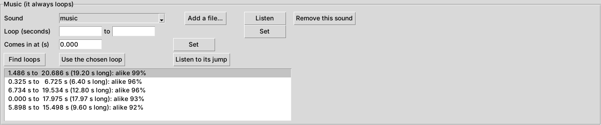
Comes in at (s) is where the music starts after the openings (step 6 suggests it). (no music) in the Sound box makes a battle with no music: the clips' and the menu's sounds play over silence.
8. The title and the endings
The Title & endings tab is optional, and a battle without it starts on its openings and stops on its ending clip. It has a panel for the title and one each for victory and defeat, and one picture for all three.

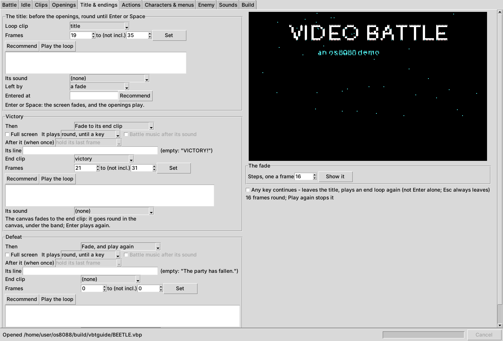
- The title plays before the openings, over the whole screen, round until Enter or Space. Choose its Loop clip, then its Frames (Recommend lists loops in it, as the Idle tab does) and Its sound. Left by is a fade, or a clip that is entered at the title's frames in Entered at (Recommend finds them) and leads into the openings.
- Victory and Defeat, Then: Hold its last frame; Fade to its end clip; Join its end clip, its last frame onto the end clip's first; or Fade, and play again. The End clip plays round, until a key or once, in the video area or Full screen; once, After it it can hold, fade to the title or join the title. Its line is the band's message at the end (empty: the default shown beside it). Battle music after its sound brings the music back after a once-through end clip's own sound.
- The fade: Steps, one a frame, 1 to 16; Show it plays the fade on the frame shown.
- Any key continues lets any key (not Esc) leave the title and replay an end loop, instead of Enter or Space alone.
9. The actions
An action is a command: what it costs, what it does, and which clip it plays. On the Actions tab, New... makes one; pick one in the list to edit it.

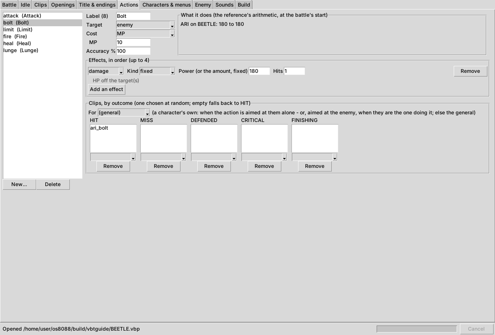
- Label (8): its name on the menu, up to 8 letters. Target: enemy, self, ally (one picked), allies (all), none; and for the enemy's moves, character or characters. Cost: none, MP, an item, or a full limit gauge. Accuracy %.
- Effects, in order (up to 4): damage (physical, magical or fixed, 1 to 4 hits), heal, restore MP, revive, guard, charge, boost or lower a stat for some turns, pass, escape, change the enemy's stance, or fill a limit gauge. The line under each says what it does.
- Clips, by outcome: the clips it plays when it HITs, MISSes, is DEFENDED, is a CRITICAL, or is FINISHING (it leaves the enemy at 0). One is chosen at random from the list; an empty list plays HIT's. For a character gives that character clips of their own: an attack shared by two heroes plays each one's own recording.
- What it does: the damage or healing each user would deal at the battle's start, its range and its critical.
The outcome is decided before the clip is chosen, so the footage always agrees with the number on the screen.
10. The characters and their menus
The Characters & menus tab holds the party, one to four characters. Add, Remove, and Up and Down to change their order, which is the order their turns come in.

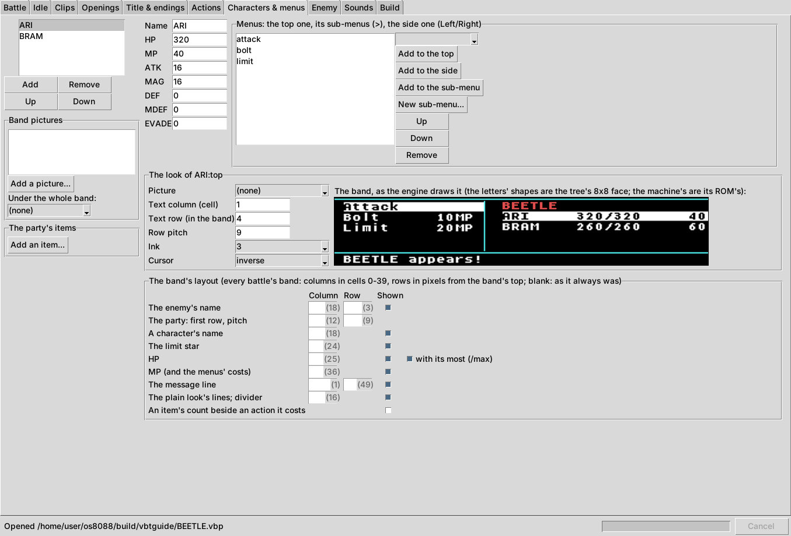
- Stats: Name, HP, MP, ATK, MAG, DEF, MDEF and EVADE.
- Menus: the top menu, which opens on the character's turn; sub-menus (New sub-menu...), which an item on it opens; and a side menu, which Left or Right opens. Choose an action in the box and Add to the top, Add to the side or Add to the sub-menu; Up, Down and Remove arrange them.
- The look of each menu: a Picture under it, its Text column and Text row, Row pitch, Ink and Cursor (inverse, or an arrow).
- The band's layout: where the enemy's name, the party, HP, MP, the limit star and the message line go, and which are shown. Blank keeps the standard place in brackets.
- Band pictures and The party's items (for actions that cost an item) are under the list.
11. The enemy

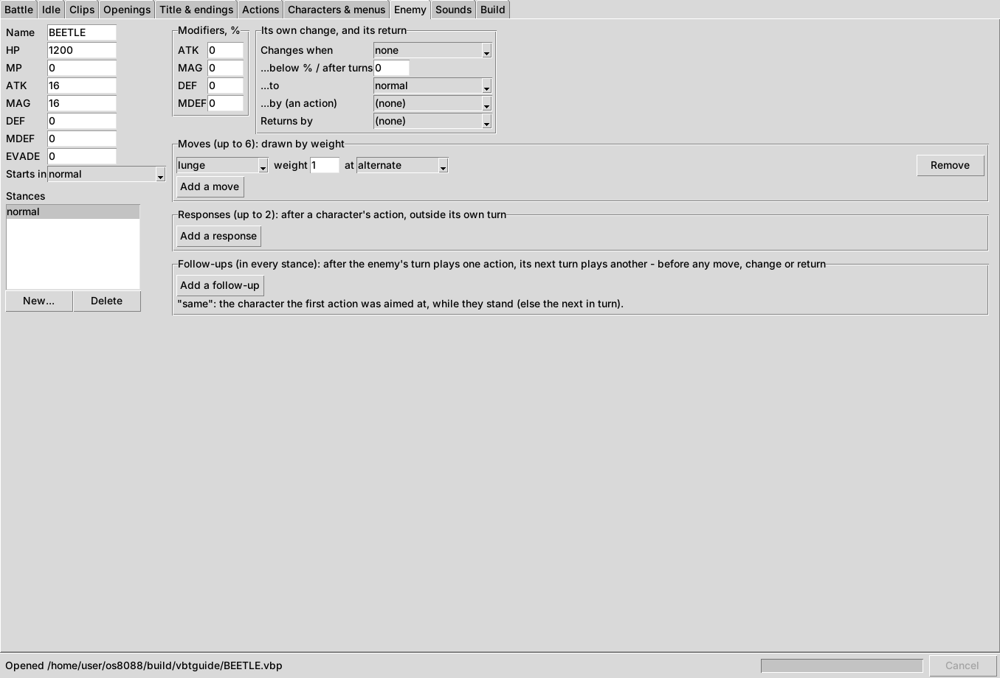
- Name and stats; Starts in: the stance it starts in.
- Stances (New..., Delete): each with its own Modifiers, % to ATK, MAG, DEF and MDEF and its own moves. An action's stance effect changes it, and a stance can change by itself (Changes when its HP is below a share or after some turns, ...to another, ...by (an action)) and return (Returns by).
- Moves (up to 6): actions drawn by weight, each aimed at a rule: alternate (each character in turn), random, lowest HP, last to hit it, or a named character.
- Responses (up to 2): an action it may take after a character's action, outside its own turn, at a chance.
- Follow-ups: after its turn plays one action, its next turn plays another.
12. The sounds
The Sounds tab lists every sound the battle plays, as loud as it will be heard, and who uses it. A sound nothing uses says nothing (not built) and costs nothing.

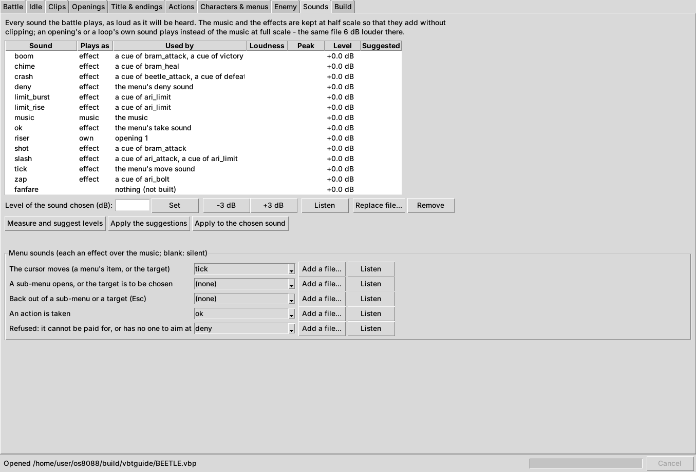
- Measure and suggest levels measures each sound as heard and suggests the level that makes it as loud as the music, never past its peak. Apply the suggestions takes them all; Apply to the chosen sound takes one.
- Choose a sound to Set its level in dB, nudge it -3 dB or +3 dB, Listen, point it at another file (Replace file..., which keeps everything that uses it), or Remove it.
- Menu sounds: a sound for the cursor moving, a sub-menu or target opening, backing out, an action taken, and a refusal. Blank is silent.
13. Build, and make a disk
On the Build tab, click Build. The window builds BATTLE.VBT beside the project (and the VGA and Hercules versions asked for), decodes every way through it to check every join, and shows what it built.

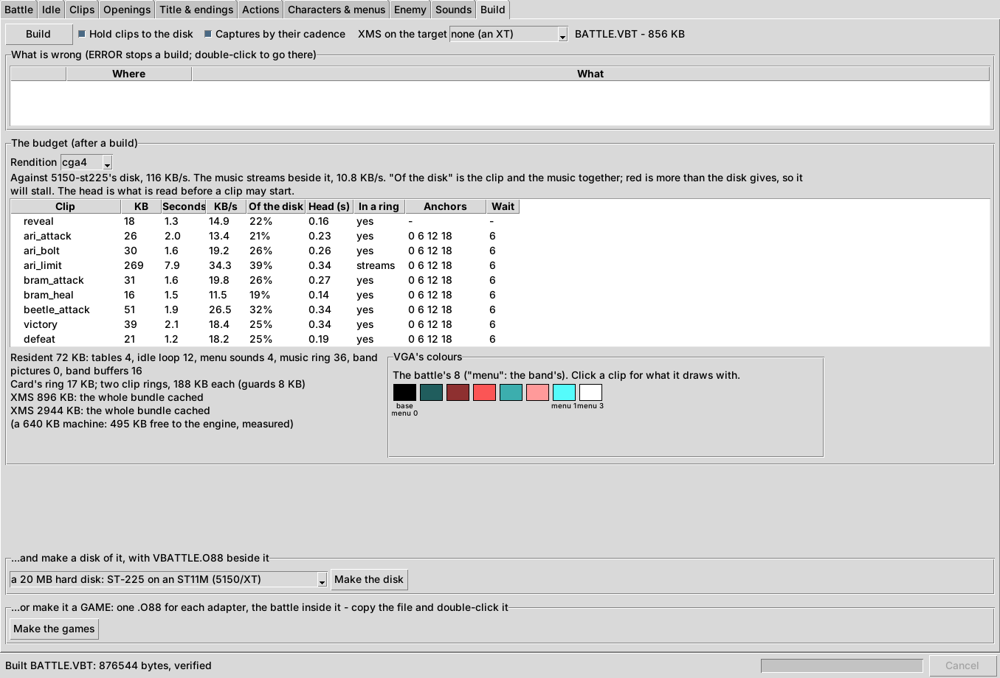
- What is wrong: every problem left. ERROR stops a build; WARN and INFO do not. Double-click one to go there.
- The budget, for each Rendition built: each clip's size, length and rate; Of the disk, the clip and the music together as a share of what the disk gives (red is more than it gives, so the clip will stall); Head (s), what is read before the clip may start; In a ring, whether it fits the player's buffer whole or streams; its anchors and its longest wait.
- The memory lines: what the player holds resident, the size of its clip buffers, and what the clip cache holds with extended memory. See Memory on a 640 KB machine.
- VGA's colours, after a VGA build: the battle's colours, which ones the band uses, and, with a clip picked in the table, how much of the clip each colour draws.

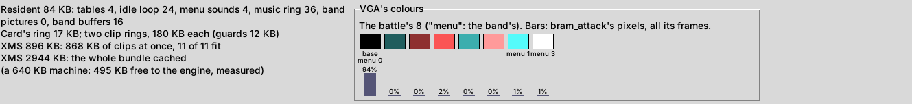
Three switches at the top change what is built: Hold clips to the disk (when and why), Captures by their cadence (when and why) and XMS on the target (when and why). Leave them as they are to start.
Then make something to play:
- ...and make a disk of it: choose the disk and click Make the disk. It starts at the disk the Made for machine has. The floppies are 360 KB, 720 KB, 1.2 MB and 1.44 MB, for drive B: beside an os8088 system disk; the hard disks are a 20 MB ST-225 on an ST11M, a 32 MB ST-238R on an ST11R, and a 32 MB IDE disk, and boot os8088 by themselves. The image goes beside the project (
BATTLE-1440.img,BATTLE-ST11M.VHD), withVBATTLE.O88and the battles built. A battle too big for the disk is refused, saying how big it is. - ...or make it a GAME: Make the games writes one
.O88for each adapter with the battle inside it, named after the battle (THEIRON.O88,THEIRONV.O88). Copy the file to any os8088 disk and double-click it. See A disk, or a game file.
14. Play it on os8088
Boot os8088, open the disk, and double-click VBATTLE.O88 (or the .VBT file itself, or a game file). With a title picture, the battle opens in a window showing it.

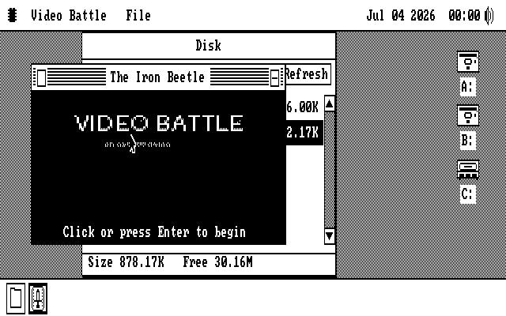
Click it or press Enter, and the battle takes the whole screen: the title loop, the openings, then the battle.

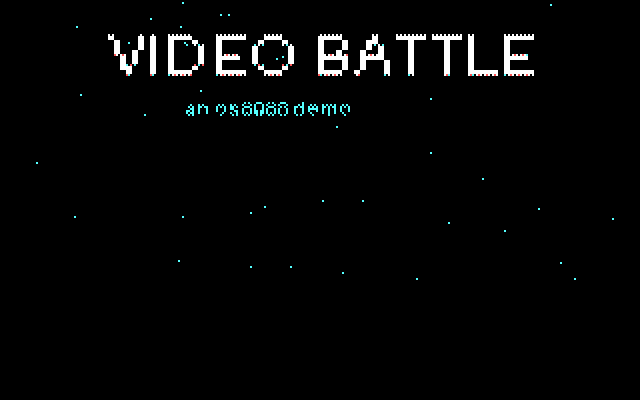

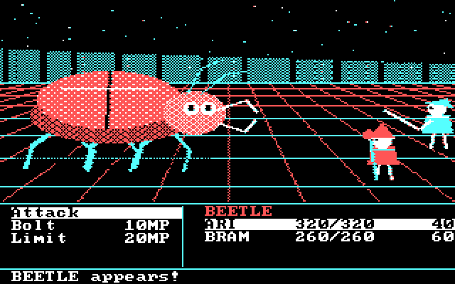

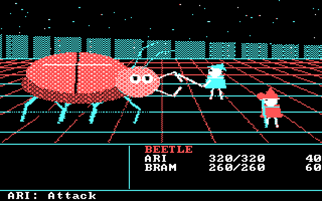

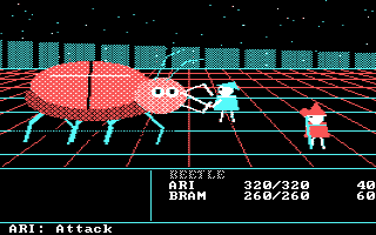
| Key | In the battle |
|---|---|
| Up Down | Move through a menu, or among the characters when an action is aimed at an ally |
| Enter or Space | Take the action, or open the sub-menu; leave the title loop |
| Left Right | Open the side menu, or go back from it |
| Esc | Back out of a sub-menu, the side menu or a target; at the top menu, or while a clip plays, leave the battle |
An action that cannot be paid for is drawn red and refused. After Esc, Enter in the battle's window plays it again.
When and why: the choices that matter
Each section here takes one decision: what it changes, when the default is right, and when to change it.
Made for, and the disk
Made for names a machine by its processor and its disk, and the note beside it gives the numbers. Its disk speed is the budget every clip is priced against on the Build tab, and the disk the Build tab first offers is that machine's.
| Choice | Use it for |
|---|---|
5150-st225 | The default: an IBM PC or XT with an ST-225 hard disk, 119 KB/s. Start here for any XT. |
5150-xtide | An XT whose disk the processor copies for (an XT-IDE, most flash cards): 96 KB/s at most, less while the picture is busy. |
5150-picomem2 | An XT with a PicoMEM 2. |
floppy | Played off a floppy: 15 KB/s. |
286-slow, 286-fast, 286-speeddemon, 286-picomem1 | A 286 with a hard disk, from a slow one to the fastest. |
486-dx2-66 | A 486 with VGA and IDE. |
lossless | No budget at all, for a look at the footage at its best. |
CGA, VGA and Hercules
Every battle is made for CGA in four colours: that is BATTLE.VBT, and it plays on any colour card. Also made for adds a version for another adapter, built from the same frames, with the same joins and rules:
- VGA (mode 0Dh): 320 x 200 in 4, 8 or 16 colours chosen from your footage. It looks much better than CGA, and costs more disk: see VGA's colours.
- Hercules (720 x 348): one bit a pixel at twice CGA's resolution, so more detail and more bytes.
Put all of them beside VBATTLE.O88; the player takes the one for the card it finds. Picture size, of the canvas sets one smaller for an adapter, centred in black: fewer bytes a frame, which is the way to bring a heavy Hercules battle inside a slow disk. Fit the video crops your footage's edges to the shape (Fill) or squeezes the whole picture in (Stretch). Clip to black and white within draws near-black as black and near-white as white, so a fade to black ends black; 16 levels is the default.
VGA's colours
A VGA battle shares one palette among every clip, so that a join never changes a colour. How many:
- 4: about what CGA costs; black and three colours from the footage.
- 8: about twice CGA's data. Usually the right choice.
- 16: about three times CGA's data. For a fast disk, or a machine with the memory to hold the battle.
VGA writes: a VGA draws each pixel in four separate passes, and a changing pixel shows a wrong colour for a moment in between. Bands of 16 rows (the default) makes that about twelve times rarer for about 9% more data. Whole frame is smallest and flashes most; Bands of 8 rows is cleanest and costs about a quarter more.
Keep the band's CGA colours on VGA spends four of the colours on the band's own CGA four; otherwise the band uses the nearest four of the footage's, and red text the footage has no red for is drawn in a pattern. Each clip's own VGA colours keeps some colours for each clip's own, swapped in as it starts; auto keeps none, so every join keeps one dither. Try more when clips have colours of their own that the shared palette misses.
A clip's own palette
On a VGA, a clip that starts and ends on a black screen can have every colour its own: its colours are loaded while the screen is black, so nothing on the glass changes colour. The Clips tab's Its colours on VGA says how a clip is treated:
- Automatic (the default): its own palette when it starts and ends on black over the whole screen - the title when a fade leaves it, a full-screen opening that ends black, an end loop an ending fades to - and the shared colours otherwise. The Build tab says which clips it gave their own.
- Its own palette: always. Use it for a clip the automatic choice misses, knowing that over a picture that is not black, or with the menu up, the colours change on the glass as it starts and ends.
- The battle's shared colours: never. Use it when a clip's own palette is not worth its colour change.
Anchors: how long a command waits
A command starts when the loop reaches one of its clip's anchors. More anchors mean a shorter wait, shown as The longest wait for an anchor; each costs the bytes of one entry (the number on the filmstrip), which the player holds in memory. Four anchors on a 24-frame loop wait at most 6 frames, 0.4 seconds; two wait 0.8. Keep the anchors whose pictures are most alike, and add more only where the wait feels long.
Joins and fades
A join goes from one picture to another directly, so it costs only the pixels that change, and it is seamless when the two pictures are alike. A fade takes the picture down to black a step a frame (the Title & endings tab's steps), and then anything can follow from black. Use a join where the footage meets itself (an ending into its own loop, the title into a clip that leaves it); use a fade where it does not. A full-screen opening that starts from black and ends on black joins anything.
The music's loop
The music always loops, so choose its loop with care: Find loops and listen to each jump. A loop of whole bars at the same point of the tune is seamless. The music is read off the disk as it plays, beside the clips, which is why it shows in the budget's Of the disk; on a floppy it must be short enough to hold in memory. Where it Comes in after the openings is set on the Openings tab, which suggests places that follow the opening's sound.
Captures by their cadence
A screen recording of a game is often made at 60 frames a second of a game that draws 15: four captured frames to each of the game's. The capture drifts against the game, so taking every fourth captured frame by time now and then takes one of the game's frames twice and skips the next: a stutter, always at the same spot of the same clip. With Captures by their cadence on (the default), a recording at a whole multiple of 15 frames a second (30, 45, 60) whose frames mostly repeat is read by where its picture changes instead, taking each of the game's frames once. Ordinary video, whose frames all differ, is read by time either way. The Build tab says how many captures were read this way. Turn it off only to compare.
Hold clips to the disk
A clip's average rate can be well inside the disk's while its first second or two is far over it, and the player then runs out of what it has read: the picture waits and the sound skips. With Hold clips to the disk on (the default), the builder draws such a frame in part, the rest over the frames after, so no stretch of a clip asks more of the disk than the Made for machine gives. The sound is kept whole. The budget names the clips it held and for how many frames. Turn it off only for a machine faster than the one you made the battle for.
XMS on the target
A 286 or later with extended memory holds whole clips there and plays them from it, so a clip the disk could not feed plays smoothly once it has been read. XMS on the target tells the builder how much the machine has free (a 1 MB machine has 896 KB, a 4 MB machine 2944 KB), and the memory lines then say how much of the battle that holds: the whole battle, or how many of its clips at once. The player uses whatever extended memory it finds; this setting changes what the builder plans for: how it holds clips to the disk, and what the memory lines report. Leave it at none (an XT) for an XT.
Memory on a 640 KB machine
The player holds some of the battle all the time: the idle loop, the menu's sounds, the music's buffer, the band's pictures and the joins' entries. The rest of the memory is two clip buffers. The memory lines on the Build tab give both, measured on a 640 KB machine. When the buffers are small, a clip streams in small pieces; when there is no room for them at all, the line says NOT ENOUGH - Play would say Not enough memory. To make room: a shorter idle loop, fewer anchors, fewer or smaller band pictures, or a smaller picture size.
A disk, or a game file
Make the disk puts the player and the battles on a floppy or a hard disk image, ready to boot or to put in drive B:. Make the games puts each battle inside its own copy of the player, one file per adapter, named after the battle: a single file to copy anywhere and double-click, at the cost of one file per adapter. Use a disk to hand someone the whole thing; use a game file to add a battle to a disk they already have.
When something looks wrong
| What you see | Why, and what to do |
|---|---|
| A clip jumps as it starts or ends | The clip's first or last frame is not much like the loop frame it joins. On the Clips tab, look at the filmstrip's scores and the difference view: take the anchors with the smallest numbers, move In or Out a frame, or pick a different exit. |
| A stutter at the same spot of a clip, every time | A screen capture read by time; see Captures by their cadence. Make sure the switch is on and build again. |
| A clip pauses, or its sound skips, on the machine | The clip asks more of the disk than the machine gives. Check the budget's Of the disk for red rows and streams; keep Hold clips to the disk on; check Made for is the machine you play on; use a smaller picture size or fewer VGA colours. On a 286, extended memory helps; see XMS on the target. |
| "Not enough memory" when the battle starts | The memory lines say NOT ENOUGH; see Memory on a 640 KB machine. Close other programs on os8088 first: the battle needs most of 640 KB. |
| A command waits too long | Too few anchors; see Anchors. |
| Colours change on the screen as a clip starts (VGA) | The clip has its own palette over a picture that is not black. Set Its colours on VGA to The battle's shared colours. |
| Pixels flash wrong colours as clips play (VGA) | VGA writes is Whole frame; choose bands. |
| Red text in the band is a pattern (VGA) | The footage has no red for the band. Tick Keep the band's CGA colours on VGA. |
| A sound is too loud or too quiet | Sounds tab: Measure and suggest levels, then Apply the suggestions. |
| A check says ERROR | Read the line, then double-click it to go to the tab it is about. The build refuses until every ERROR is gone. |
| "... is not a video that can be read" | ffmpeg could not read the file. Check that it plays on your computer and that ffmpeg is on your PATH. |
| The battle is not the one you expected on VGA or Hercules | The player takes BATTLEV.VBT on a VGA and BATTLEH.VBT on a Hercules when they are beside it, and BATTLE.VBT otherwise. Build again, and copy all of them. |
If a battle stutters and none of this explains it, play it with VBATTLED.O88 instead of VBATTLE.O88. It plays the same battle and writes VBPROF1.DAT beside itself (then 2, 3, ...), a record of every frame of the play: send that, with what you saw, to whoever looks after Video Battle.
The command line
Everything the window does is also a command, which is useful for scripts and for building on a machine with no screen.
python3 os88vbt.py demo-project demo.vbp the demo battle as a project (no footage needed)
python3 os88vbt.py build PROJECT.vbp BATTLE.VBT (and each version asked for) beside it
python3 os88vbt.py disk PROJECT.vbp --disk 3 ...and a 1.44 MB floppy of it
python3 os88vbt.py game PROJECT.vbp each version inside its own .O88
python3 os88vbt.py recommend PROJECT.vbp the loop's and every clip's points, with their scores
python3 os88vbt.py info BATTLE.VBT what is in a bundle
python3 os88vbt.py verify BATTLE.VBT decode every path and check every join
python3 vbtproj.py PROJECT.vbp what is wrong with a project
python3 vbtana.py --help the analysis, one command each--disk takes 0 to 3 for the 360 KB, 720 KB, 1.2 MB and 1.44 MB floppies and 4 to 6 for the ST-225, the ST-238R and the IDE hard disk. python3 os88vbt.py COMMAND --help lists each command's options.
Words used in this guide
| Word | Meaning |
|---|---|
| Anchor | A frame of the idle loop a clip can start from. |
| Band | The rows under the video: the menu, the party and the message line. |
| Bundle | The battle's file, BATTLE.VBT. |
| Canvas | The video area above the band. |
| Capture | Footage recorded off a screen, often at a multiple of the game's frame rate. |
| Clip | A stretch of footage the battle plays: an action, an opening, an ending, a loop. |
| End loop | A loop played after victory or defeat, round until a key. |
| Entry | The frame that takes the screen from an anchor to a clip's first frame. One per anchor, held in memory. |
| Exit | The idle loop frame a clip's last frame joins. |
| Fade | The picture taken down to black a step a frame. |
| Idle loop | The scene standing still, played round while the player chooses. |
| Join | One picture going straight to another, exactly. |
| Opening | A clip played before the battle. |
| Rendition | The battle made for one adapter: CGA, VGA or Hercules. |
| Resident | Held in memory for the whole battle. |
| Seam | Where a loop's last frame goes back to its first. |
| Stance | The enemy's mode: its modifiers and its moves. |
| Streams | Read off the disk while it plays, rather than read whole first. |
| XMS | Extended memory, above 1 MB, on a 286 or better. |
The battle in this guide is os8088's own demo, drawn and scored for the project with nothing captured from anywhere. Its pictures are made again by tools/os88vbtguide.py in the os8088 source tree.